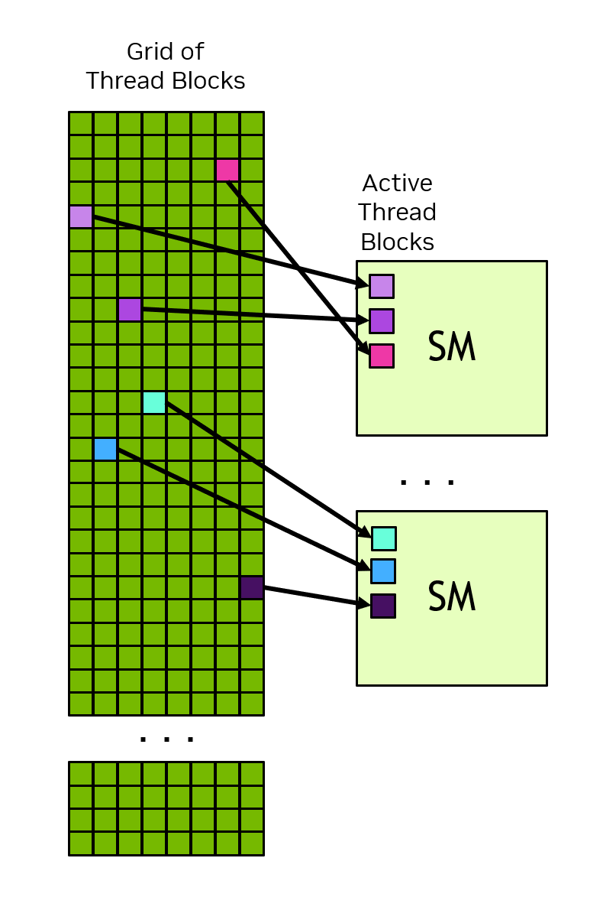
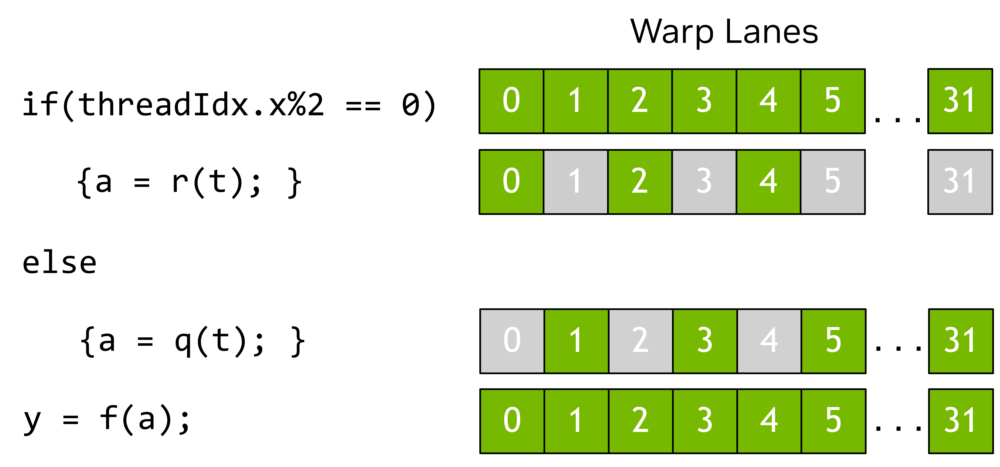

이 장에서는 언어와 무관하게 높은 수준에서 CUDA 프로그래밍 모델을 소개합니다. 여기서 소개하는 용어와 개념은 지원되는 어떤 프로그래밍 언어에서든 CUDA에 적용됩니다. 이후 장에서는 이러한 개념을 C++로 설명합니다.
1.2.1. 이기종 시스템#
CUDA 프로그래밍 모델은 이기종 컴퓨팅 시스템을 가정하며, 이는 GPU와 CPU를 모두 포함하는 시스템을 의미합니다. CPU와 CPU에 직접 연결된 메모리를 각각 호스트와 호스트 메모리라고 합니다. GPU와 GPU에 직접 연결된 메모리는 각각 디바이스와 디바이스 메모리라고 부릅니다. 일부 시스템 온 칩(SoC) 시스템에서는 이들이 하나의 패키지에 포함될 수 있습니다. 더 큰 시스템에서는 여러 개의 CPU 또는 GPU가 있을 수 있습니다.
CUDA 애플리케이션은 코드의 일부를 GPU에서 실행하지만, 애플리케이션은 항상 CPU에서 실행을 시작합니다. CPU에서 실행되는 코드인 호스트 코드는 CUDA API를 사용하여 호스트 메모리와 디바이스 메모리 간에 데이터를 복사하고, GPU에서 실행될 코드를 시작하며, 데이터 복사 또는 GPU 코드가 완료될 때까지 대기할 수 있습니다. CPU와 GPU는 동시에 코드를 실행할 수 있으며, 일반적으로 CPU와 GPU 모두의 활용도를 최대화할 때 최상의 성능을 얻을 수 있습니다.
애플리케이션이 GPU에서 실행하는 코드는 디바이스 코드라고 하며, GPU에서 실행되도록 호출되는 함수는 역사적 이유로 커널이라고 부릅니다. 커널의 실행을 시작하는 행위를 커널을 실행(launch)한다고 합니다. 커널 실행은 GPU에서 커널 코드를 병렬로 실행하는 많은 스레드를 시작하는 것으로 생각할 수 있습니다. GPU 스레드는 CPU의 스레드와 유사하게 동작하지만, 올바름과 성능 모두에 중요하게 영향을 미치는 몇 가지 차이점이 있으며 이는 이후 절에서 다룰 것입니다( Section 3.2.2.1.1 참조).
1.2.2. GPU 하드웨어 모델#
모든 프로그래밍 모델과 마찬가지로, CUDA는 기본 하드웨어에 대한 개념적 모델에 의존합니다. CUDA 프로그래밍의 목적을 위해 GPU는 스트리밍 멀티프로세서(SM)들의 집합으로 볼 수 있으며, 이들은 그래픽 처리 클러스터(GPC)라고 불리는 그룹으로 구성됩니다. 각 SM에는 로컬 레지스터 파일, 통합 데이터 캐시, 그리고 계산을 수행하는 여러 기능 유닛이 포함됩니다. 통합 데이터 캐시는 공유 메모리와 L1 캐시에 대한 물리적 리소스를 제공합니다. 통합 데이터 캐시를 L1과 공유 메모리에 어떻게 할당할지는 런타임에 구성할 수 있습니다. 서로 다른 유형의 메모리 크기와 SM 내 기능 유닛의 수는 GPU 아키텍처에 따라 달라질 수 있습니다.
참고
GPU의 실제 하드웨어 레이아웃이나 프로그래밍 모델의 실행을 물리적으로 수행하는 방식은 달라질 수 있습니다. 이러한 차이는 CUDA 프로그래밍 모델을 사용하여 작성된 소프트웨어의 올바름에 영향을 주지 않습니다.

그림 2 GPU에는 많은 스트리밍 멀티프로세서(SM)가 있으며, 각 SM에는 많은 기능 유닛이 포함됩니다. 그래픽 처리 클러스터(GPC)는 SM들의 집합입니다. GPU는 GPU 메모리에 연결된 GPC들의 집합입니다. CPU는 일반적으로 여러 코어와 시스템 메모리에 연결되는 메모리 컨트롤러를 갖습니다. CPU와 GPU는 PCIe 또는 NVLINK와 같은 인터커넥트로 연결됩니다.#
1.2.2.1. 스레드 블록과 그리드#
애플리케이션이 커널을 실행(launch)할 때, 많은 스레드(종종 수백만 개의 스레드)로 실행합니다. 이러한 스레드는 블록으로 구성됩니다. 스레드의 블록은, 어쩌면 놀랍지 않게도, 스레드 블록이라고 합니다. 스레드 블록은 그리드로 구성됩니다. 그리드에 포함된 모든 스레드 블록은 동일한 크기와 차원을 가집니다. 그림 3은 스레드 블록 그리드의 예시를 보여줍니다.

그림 3 스레드 블록 그리드. 각 화살표는 스레드를 나타냅니다(화살표의 개수는 실제 스레드 수를 나타내는 것이 아닙니다).#
스레드 블록과 그리드는 1, 2 또는 3차원일 수 있습니다. 이러한 차원은 개별 스레드를 작업 단위 또는 데이터 항목에 매핑하는 것을 단순화할 수 있습니다.
커널이 실행(launch)될 때는 그리드와 스레드 블록 차원을 지정하는 특정 실행 구성(execution configuration)을 사용하여 실행됩니다. 실행 구성에는 클러스터 크기, 스트림, SM 구성 설정과 같은 선택적 매개변수도 포함될 수 있으며, 이는 이후 절에서 소개됩니다.
각 스레드는 내장 변수를 사용하여 자신이 포함된 블록 내에서의 위치와, 포함된 그리드 내에서 자신의 블록 위치를 확인할 수 있습니다. 또한 스레드는 이러한 내장 변수를 사용하여 커널이 실행(launch)된 스레드 블록과 그리드의 차원도 확인할 수 있습니다. 이를 통해 각 스레드는 커널을 실행 중인 모든 스레드 가운데 고유한 식별자를 갖게 됩니다. 이 식별자는 스레드가 어떤 데이터 또는 어떤 연산을 담당하는지 결정하는 데 자주 사용됩니다.
스레드 블록의 모든 스레드는 단일 SM에서 실행됩니다. 이를 통해 스레드 블록 내 스레드는 서로 효율적으로 통신하고 동기화할 수 있습니다. 스레드 블록 내 스레드는 모두 온칩 공유 메모리에 접근할 수 있으며, 이는 스레드 블록의 스레드 간 정보 교환에 사용할 수 있습니다.
그리드는 수백만 개의 스레드 블록으로 구성될 수 있는 반면, 그리드를 실행하는 GPU는 수십 또는 수백 개의 SM만 가질 수도 있습니다. 스레드 블록의 모든 스레드는 단일 SM에서 실행되며, 대부분의 경우 [1] 해당 SM에서 완료될 때까지 실행됩니다. 스레드 블록 간 스케줄링에는 보장이 없으므로, 한 스레드 블록은 다른 스레드 블록의 결과에 의존할 수 없습니다. 다른 스레드 블록은 그 스레드 블록이 완료될 때까지 스케줄될 수 없을 수도 있기 때문입니다. 그림 4는 그리드의 스레드 블록이 SM에 할당되는 방식의 예를 보여줍니다.
{kind=link}

그림 4 각 SM에는 하나 이상의 활성 스레드 블록이 있습니다. 이 예에서는 각 SM에 세 개의 스레드 블록이 동시에 스케줄됩니다. 그리드의 스레드 블록이 SM에 할당되는 순서에 대해서는 어떠한 보장도 없습니다.#
CUDA 프로그래밍 모델은 SM이 하나뿐이든 수천 개의 SM이 있든, 어떤 크기의 GPU에서도 임의로 큰 그리드를 실행할 수 있게 합니다. 이를 달성하기 위해, 일부 예외를 제외하고 CUDA 프로그래밍 모델은 서로 다른 스레드 블록에 속한 스레드들 사이에 데이터 의존성이 없을 것을 요구합니다. 즉, 한 스레드는 같은 그리드의 다른 스레드 블록에 있는 스레드의 결과에 의존하거나 그 스레드와 동기화해서는 안 됩니다. 스레드 블록 내의 모든 스레드는 같은 SM에서 같은 시간에 실행됩니다. 그리드 내의 서로 다른 스레드 블록은 사용 가능한 SM들 사이에서 스케줄되며 어떤 순서로든 실행될 수 있습니다. 요컨대 CUDA 프로그래밍 모델은 스레드 블록을 어떤 순서로든, 병렬 또는 직렬로 실행할 수 있어야 함을 요구합니다.
1.2.2.1.1. 스레드 블록 클러스터#
스레드 블록에 더해, 컴퓨트 기능 9.0 이상을 가진 GPU에는 클러스터라고 불리는 선택적 그룹화 수준이 있습니다. 클러스터는 스레드 블록들의 그룹이며, 스레드 블록과 그리드처럼 1, 2 또는 3차원으로 배치할 수 있습니다. 그림 5는 클러스터로도 구성된 스레드 블록 그리드를 보여줍니다. 클러스터를 지정해도 그리드 차원이나 그리드 내 스레드 블록의 인덱스는 변하지 않습니다.

그림 5 클러스터가 지정되면, 스레드 블록은 그리드에서 동일한 위치에 있으면서도, 포함된 클러스터 내에서의 위치도 갖습니다.#
클러스터를 지정하면 인접한 스레드 블록을 클러스터로 그룹화하며, 클러스터 수준에서의 동기화와 통신을 위한 추가적인 기회를 제공합니다. 구체적으로, 클러스터의 모든 스레드 블록은 단일 GPC에서 실행됩니다. 그림 6은 클러스터가 지정되었을 때 GPC의 SM에 스레드 블록이 스케줄되는 방식을 보여줍니다. 스레드 블록이 단일 GPC 내에서 동시에 스케줄되기 때문에, 서로 다른 블록에 속하더라도 같은 클러스터 내에 있는 스레드들은 코오퍼러티브 그룹(Cooperative Groups)이 제공하는 소프트웨어 인터페이스를 사용하여 서로 통신하고 동기화할 수 있습니다. 클러스터의 스레드는 클러스터 내 모든 블록의 공유 메모리에 접근할 수 있으며, 이를 분산 공유 메모리라고 합니다. 클러스터의 최대 크기는 하드웨어에 의존하며 디바이스마다 달라집니다.
그림 6은 클러스터 내 스레드 블록이 GPC 내 SM들에서 어떻게 동시에 스케줄되는지를 보여줍니다. 클러스터 내 스레드 블록은 그리드에서 항상 서로 인접해 있습니다.

그림 6 클러스터가 지정되면, 클러스터의 스레드 블록은 그리드 내에서 클러스터 모양에 맞게 배치됩니다. 클러스터의 스레드 블록은 단일 GPC의 SM들에서 동시에 스케줄됩니다.#
1.2.2.2. 워프와 SIMT#
스레드 블록 내에서 스레드는 32개 스레드로 이루어진 워프(warp)라는 그룹으로 구성됩니다. 워프는 단일 명령어 다중 스레드(Single-Instruction Multiple-Threads, SIMT) 패러다임으로 커널 코드를 실행합니다. SIMT에서는 워프의 모든 스레드가 동일한 커널 코드를 실행하지만, 각 스레드는 코드에서 서로 다른 분기를 따라갈 수 있습니다. 즉, 프로그램의 모든 스레드는 같은 코드를 실행하지만, 스레드가 같은 실행 경로를 따라야 하는 것은 아닙니다.
스레드가 워프에 의해 실행될 때, 워프 레인(warp lane)이 할당됩니다. 워프 레인은 0부터 31까지 번호가 매겨지며, 스레드 블록의 스레드는 하드웨어 멀티스레딩에 상세히 설명된 예측 가능한 방식으로 워프에 할당됩니다.
워프 내의 모든 스레드는 동일한 명령어를 동시에 실행합니다. 워프 내 일부 스레드는 실행 중 제어 흐름 분기를 따르지만 다른 스레드는 그렇지 않은 경우, 분기를 따르지 않는 스레드는 분기를 따르는 스레드가 실행되는 동안 마스크 처리되어 비활성화됩니다. 예를 들어, 어떤 조건이 워프 내 스레드 절반에만 참인 경우, 활성 스레드가 해당 명령어를 실행하는 동안 워프의 나머지 절반은 마스크 처리됩니다. 이러한 상황은 그림 7에 나와 있습니다. 워프 내 서로 다른 스레드가 서로 다른 코드 경로를 따를 때 이를 워프 발산(warp divergence)이라고 부르기도 합니다. 따라서 워프 내 스레드가 동일한 제어 흐름 경로를 따를 때 GPU 활용률이 최대화됩니다.
{kind=link}

그림 7 이 예에서는 짝수 스레드 인덱스를 가진 스레드만 if 문 본문을 실행하며, 나머지는 본문이 실행되는 동안 마스크 처리됩니다.#
SIMT 모델에서는 워프(warp) 내의 모든 스레드가 커널을 락스텝(lock step)으로 진행합니다. 하드웨어 실행은 다를 수 있습니다. 이러한 구분이 중요한 경우에 대한 자세한 내용은 독립적 스레드 실행 섹션을 참조하십시오. 워프 실행이 실제 하드웨어에 어떻게 매핑되는지에 대한 지식을 활용하는 것은 권장되지 않습니다. CUDA 프로그래밍 모델과 SIMT는 워프 내의 모든 스레드가 코드를 함께 진행한다고 말합니다. 프로그래밍 모델을 따르는 한, 하드웨어는 프로그램에 투명한 방식으로 마스크된 레인을 최적화할 수 있습니다. 프로그램이 이 모델을 위반하면, 서로 다른 GPU 하드웨어에서 다르게 나타날 수 있는 정의되지 않은 동작이 발생할 수 있습니다.
CUDA 코드를 작성할 때 워프를 고려할 필요는 없지만, 워프 실행 모델을 이해하는 것은 전역 메모리 코얼레싱 및 공유 메모리 뱅크 액세스 패턴과 같은 개념을 이해하는 데 도움이 됩니다. 일부 고급 프로그래밍 기법은 스레드 블록 내에서 워프를 특화하여 스레드 발산을 제한하고 활용률을 극대화합니다. 이 최적화와 다른 최적화는 실행 시 스레드가 워프로 그룹화된다는 지식을 활용합니다.
워프 실행이 갖는 한 가지 함의는 스레드 블록의 총 스레드 수를 32의 배수로 지정하는 것이 가장 좋다는 점입니다. 어떤 스레드 수를 사용해도 합법적이지만, 총 스레드 수가 32의 배수가 아니면 스레드 블록의 마지막 워프는 실행 내내 사용되지 않는 일부 레인을 갖게 됩니다. 이는 해당 워프에 대해 기능 유닛 활용률과 메모리 액세스가 최적이 아닌 상태로 이어질 가능성이 큽니다.
SIMT는 종종 단일 명령어 다중 데이터(SIMD) 병렬성과 비교되지만, 몇 가지 중요한 차이가 있습니다. SIMD에서는 실행이 단일 제어 흐름 경로를 따르는 반면, SIMT에서는 각 스레드가 자신의 제어 흐름 경로를 따를 수 있습니다. 이 때문에 SIMT는 SIMD처럼 고정된 데이터 폭을 갖지 않습니다. SIMT에 대한 더 자세한 논의는 SIMT 실행 모델에서 찾을 수 있습니다.
1.2.3. GPU 메모리#
현대 컴퓨팅 시스템에서는 메모리를 효율적으로 활용하는 것이 계산을 수행하는 기능 유닛의 사용을 최대화하는 것만큼이나 중요합니다. 이기종 시스템에는 여러 메모리 공간이 있으며, GPU에는 캐시 외에도 다양한 유형의 프로그래밍 가능한 온칩 메모리가 포함됩니다. 다음 섹션에서는 이러한 메모리 공간을 더 자세히 소개합니다.
1.2.3.1. 이기종 시스템의 DRAM 메모리#
GPU와 CPU 모두 직접 연결된 DRAM 칩을 갖습니다. GPU가 둘 이상인 시스템에서는 각 GPU가 자체 메모리를 갖습니다. 디바이스 코드 관점에서 GPU에 연결된 DRAM은 GPU의 모든 스트리밍 멀티프로세서(SM)에서 접근할 수 있기 때문에 전역 메모리라고 부릅니다. 이 용어가 시스템 내 어디에서나 반드시 접근 가능하다는 의미는 아닙니다. CPU에 연결된 DRAM은 시스템 메모리 또는 호스트 메모리라고 부릅니다.
CPU와 마찬가지로 GPU는 가상 메모리 주소 지정을 사용합니다. 현재 지원되는 모든 시스템에서 CPU와 GPU는 단일 통합 가상 메모리 공간을 사용합니다. 이는 시스템의 각 GPU에 대한 가상 메모리 주소 범위가 CPU 및 시스템 내의 다른 모든 GPU와 고유하게 구분된다는 것을 의미합니다. 주어진 가상 메모리 주소에 대해 해당 주소가 GPU 메모리에 있는지 시스템 메모리에 있는지, 그리고 다중 GPU 시스템에서는 어떤 GPU 메모리에 그 주소가 포함되는지를 결정할 수 있습니다.
GPU 메모리, CPU 메모리를 할당하고, CPU와 GPU의 할당 간, GPU 내, 또는 다중 GPU 시스템에서 GPU 간에 복사하기 위한 CUDA API가 있습니다. 필요할 때 데이터의 지역성(locality)을 명시적으로 제어할 수 있습니다. 아래에서 논의하는 통합 메모리를 사용하면, CUDA 런타임 또는 시스템 하드웨어가 메모리 배치를 자동으로 처리할 수 있습니다.
1.2.3.2. GPU의 온칩 메모리#
전역 메모리 외에도 각 GPU에는 일부 온칩 메모리가 있습니다. 각 SM은 자체 레지스터 파일과 공유 메모리를 갖습니다. 이러한 메모리는 SM의 일부이며 SM 내에서 실행되는 스레드가 매우 빠르게 접근할 수 있지만, 다른 SM에서 실행되는 스레드는 접근할 수 없습니다.
레지스터 파일은 일반적으로 컴파일러가 할당하는 스레드 로컬 변수를 저장합니다. 공유 메모리는 스레드 블록 또는 클러스터 내의 모든 스레드가 접근할 수 있습니다. 공유 메모리는 스레드 블록 또는 클러스터의 스레드 간 데이터 교환에 사용할 수 있습니다.
SM의 레지스터 파일과 통합 데이터 캐시는 크기가 유한합니다. SM의 레지스터 파일 크기, 통합 데이터 캐시 크기, 그리고 통합 데이터 캐시를 L1과 공유 메모리 간 균형을 위해 어떻게 구성할 수 있는지에 대한 정보는 컴퓨트 기능(Compute Capability)별 메모리 정보에서 확인할 수 있습니다. 레지스터 파일, 공유 메모리 공간, 그리고 L1 캐시는 스레드 블록 내의 모든 스레드가 공유합니다.
스레드 블록을 SM에 스케줄링하려면, 각 스레드에 필요한 레지스터 총 개수에 스레드 블록의 스레드 수를 곱한 값이 SM에서 사용 가능한 레지스터 수보다 작거나 같아야 합니다. 스레드 블록에 필요한 레지스터 수가 레지스터 파일 크기를 초과하면 커널은 런치(launch)할 수 없으며, 스레드 블록을 런치 가능하게 만들기 위해 스레드 블록의 스레드 수를 줄여야 합니다.
공유 메모리 할당은 스레드 블록 수준에서 수행됩니다. 즉, 스레드당(per thread)인 레지스터 할당과 달리, 공유 메모리 할당은 전체 스레드 블록에 공통입니다.
1.2.3.2.1. 캐시#
프로그래밍 가능한 메모리 외에도 GPU에는 L1 및 L2 캐시가 모두 있습니다. 각 SM에는 통합 데이터 캐시의 일부인 L1 캐시가 있습니다. 더 큰 L2 캐시는 GPU 내의 모든 SM이 공유합니다. 이는 그림 2의 GPU 블록 다이어그램에서 확인할 수 있습니다. 각 SM에는 또한 별도의 상수 캐시가 있으며, 이는 커널의 수명 동안 상수로 선언된 전역 메모리 값을 캐시하는 데 사용됩니다. 컴파일러는 커널 파라미터를 상수 메모리에 배치할 수도 있습니다. 이는 L1 데이터 캐시와 별도로 SM에서 커널 파라미터를 캐시할 수 있게 하여 커널 성능을 향상시킬 수 있습니다.
1.2.3.3. 통합 메모리#
애플리케이션이 GPU 또는 CPU에서 메모리를 명시적으로 할당하면, 그 메모리는 해당 디바이스에서 실행되는 코드만 접근할 수 있습니다. 즉, CPU 메모리는 CPU 코드에서만 접근할 수 있고, GPU 메모리는 GPU에서 실행되는 커널에서만 접근할 수 있습니다[2] . CPU와 GPU 간에 메모리를 복사하는 CUDA API는 적절한 시점에 올바른 메모리로 데이터를 명시적으로 복사하는 데 사용됩니다.
통합 메모리라고 불리는 CUDA 기능은 CPU 또는 GPU에서 접근할 수 있는 메모리 할당을 애플리케이션이 만들 수 있게 해줍니다. CUDA 런타임 또는 기본 하드웨어가 필요할 때 접근을 가능하게 하거나 데이터를 올바른 위치로 재배치합니다. 통합 메모리를 사용하더라도, 메모리 마이그레이션을 최소화하고 가능한 한 데이터가 상주하는 메모리에 직접 연결된 프로세서에서 데이터를 접근할 때 최적의 성능을 얻을 수 있습니다.
시스템의 하드웨어 기능은 메모리 공간 간 데이터 접근 및 교환이 어떻게 달성되는지를 결정합니다. 섹션 통합 메모리에서는 통합 메모리 시스템의 서로 다른 범주를 소개합니다. 섹션 통합 메모리에는 모든 상황에서의 통합 메모리 사용 및 동작에 대한 훨씬 더 많은 세부 내용이 포함되어 있습니다.